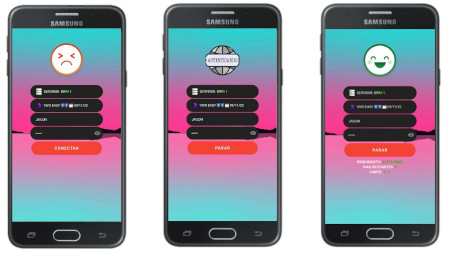

RN Lite 5
O aplicativo Rosário Net lite versão 5, instala na maioria dos dispositivos móveis, é um aplicativo leve, discreto, elegante e fácil de usar, está configurado para atualizar online os servidores.
Download

Especificações Extras
- Sem notificações ao conectar
- Compressão SSH ativado
- Auto pinger ativado
- Fundo fixo
- Sem barra de navegação
- Sem inicio e registro
- Sem menu lateral esquerdo
- Sem nome do app no título
- Package alterado
- Partículas 🚫
- Sem botão renew
- Atualização online no ícone
- Transição conectar e desconectar
- Leve pesando apenas 5MB
(com.ressurection.free) Package